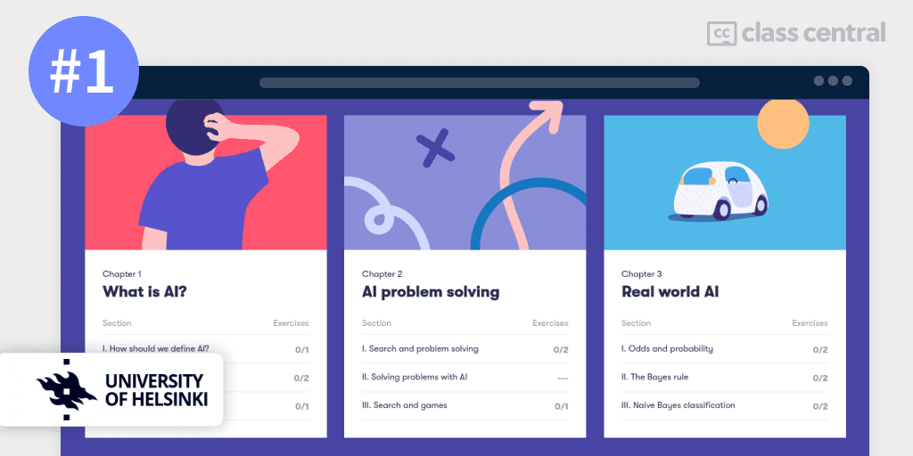
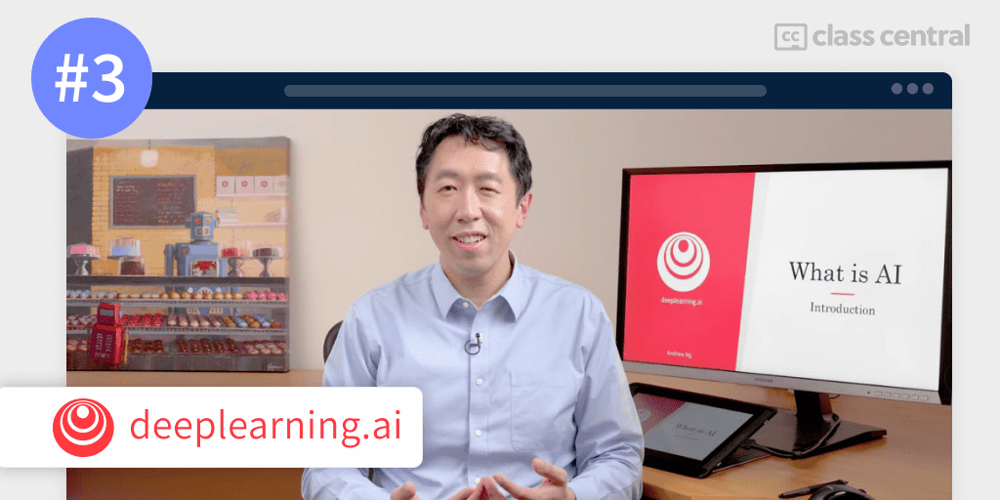
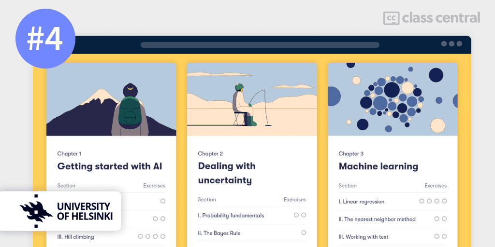
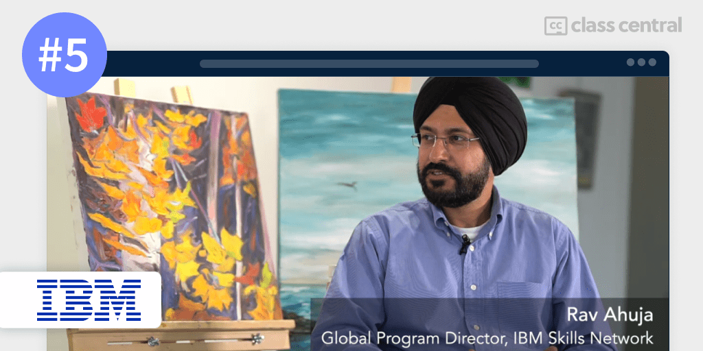
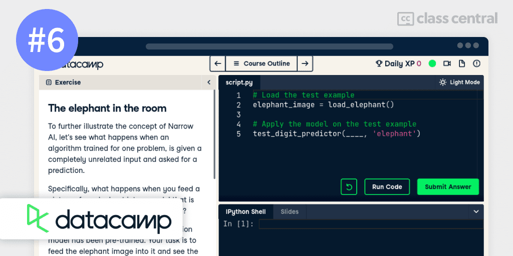

10 Best Artificial Intelligence Courses to Take in 2023
I’ve put together a list of the best AI courses available online. Learn about AI and its promises for the future!
In this guide, I’ve gathered and ranked the best courses to learn Artificial Intelligence, following a well-established methodology that you can read all about below.
But if you’re in a hurry, here are my top picks. I highlighted the courses that include a free certificate. Click on a course to skip to the course details:
| Course | Workload | In Brief |
| 1. Introduction to AI (Helsinki) | 60 hours | Best overall for beginners with free certificate |
| 2. CS50’s Artificial Intelligence with Python (Harvard) | 100–200 hours | Best AI and Python basics course with free certificate |
| 3. AI For Everyone (DeepLearning.AI) | 12 hours | Focuses on AI applications in business settings |
| 4. Building AI (Helsinki) | 50 hours | Hands-on, optionally zero-code with free certificate |
| 5. Introduction to Artificial Intelligence (IBM) | 11 hours | Great all-rounder introduction to AI |
| 6. AI Fundamentals (DataCamp) | 4 hours | Concise introduction to AI concepts |
| 7. Digital Skills: Artificial Intelligence (Accenture) | 6 hours | Well-rounded course for non-technical people |
| 8. Math for AI beginner part 1 (KAIST) | 8 hours | Teaches the linear algebra needed for AI |
| 9. Modern Artificial Intelligence Masterclass (Udemy) | 16 hours | Intermediate paid course with variety of topics |
| 10. Practical Python for AI Coding 2 (KAIST) | 9 hours | Teaches the Python libraries used for coding AI |
What is Artificial Intelligence?
Artificial Intelligence is the field concerned with making machines learn from experience and adapt to new observations just like a human would. It is an incredibly progress-driven field with a wide area of applications ranging from medical to marketing to virtual reality and much more.
Someday, AI is bound to transform the world. It is already an important face of many of the applications we use today. And its importance will only grow from here. Hence, learning AI technology will future-proof your career.
According to LinkedIn Talent Solutions, demand is high for tech professionals with artificial intelligence experience. And if you look at the World Economic Forum’s Future of Jobs Report, it is peppered with references to Artificial Intelligence, denoting its importance of the jobs of tomorrow.

Course Ranking Methodology
I built this ranking following the now tried-and-tested methodology that I used in previous rankings (you can find them all here). It involves a three-step process:
First, let me introduce myself. I’m part of the Class Central team, and I (@elham) built this ranking in collaboration with my friend and colleague @manoel.
We built this ranking by searching through our extensive database of 100K online courses and looking at features like ratings, reviews, and bookmarks. We sifted through the sea of online courses to bring you the very best out there.
Of course, the best courses get around by word of mouth, but ratings and reviews don’t tell the whole story. Some courses receive so much attention (especially some of the older courses: the classics!) that other excellent resources can go unnoticed. Hence, the next step was to bring our knowledge of online education into the mix.
Second, we used our experience as online learners to evaluate each preliminary pick.
We both come from computer science backgrounds and are prolific online learners, having completed about 45 MOOCs between us. Additionally, Manoel has an online bachelor’s in computer science, while I am currently completing my foundation in computer science.
We carefully analyzed each course and ranked them one by one. We bounced ideas off each other and made iterative improvements to the rankings, until we were both satisfied. That is the ranking you are reading right now!
Third, during our research, we stumbled across courses that we felt were well-made but weren’t well-known. Had we adopted a purely data-centric approach, we would have to leave those courses out of the ranking, if only because they had fewer enrollments.
Instead, we favored a holistic approach. To spice up this ranking, we’ve added a diverse range of AI courses that will hopefully appeal to each of our readers’ taste buds.
After going through this process — combining Class Central data, our experience as lifelong learners, and a lot of editing — we arrived at our final ranking. So far, we’ve spent more than 15 hours building this ranking, and we intend to continue updating it in the future.
Course Ranking Statistics
Here are some aggregate stats about the ranking:
- The most popular course in this ranking has around 756K enrollments.
- All together, the course’s enrollments add up to a total of 1.5M enrollments.
- 8 courses are free or free-to-audit, while 2 are paid.
- Together, they account for 700+ reviews at Class Central.
- The most represented course provider on this list is Coursera.
- About 306K people are following Artificial Intelligence Courses on Class Central.
Without further ado, let’s go through the top picks.
1. Elements of AI (University of Helsinki)

My #1 pick for the best artificial intelligence course is Elements of AI by the University of Helsinki.
The reason why this course is my top pick is because virtually anyone can start their AI-learning journey here and leave with impressive knowledge, whether you’re a programmer or not.
This course is open to everyone interested in learning what artificial intelligence is, what is possible (and not possible) with AI, and how it affects our lives — no complicated math or programming required!
The course includes modules on machine learning, neural networks, the philosophy and ethics of artificial intelligence, and using artificial intelligence to solve problems.
What You’ll Learn
The course contains six modules: What is AI?, AI problem solving, real world AI, machine learning, neural networks, and implications (of AI).
In the first module, you’ll learn how to define AI — or rather how difficult it is to define. Autonomy and adaptivity are two key concepts for explaining and understanding AI, and you’ll apply these to different fields of AI. You’ll also explore basic philosophical problems like the Turing test and Chinese room thought experiment, and their implications for AI.
Many problems can be formulated as search problems, like the popular River crossing puzzle. In the second module, you’ll learn about AI search algorithms. You’ll start by formulating a real-world problem as a search problem, drawing game trees and state diagrams of these problems. Often, there may be more than one solution to a problem but you want to find the best solution. By using the minimax principle, you’ll learn how to come up with an optimal solution, and prove it.
The third module deals with probability. Being uncertain may sound like a weakness, but when most natural phenomena are random, thinking in probabilities makes AI super powerful. You’ll learn and apply the Bayes rule to infer risks in scenarios like the odds of having breast cancer given a positive test, as well as explain the base-rate fallacy and how to avoid it with Bayesian reasoning. Naive Bayes classification is based on the same methods and is used to detect spam emails in your inbox, among others.
The fourth and fifth module dive into the theory behind machine learning and neural networks, which are methods for AIs to learn and adapt to new information. There are two main categories of machine learning: supervised and unsupervised. You’ll focus on learning a few supervised machine learning methods such as the nearest neighbor method, linear regression, and logistic regression. You’ll learn what a neural network is, how they are built, and where they are currently being used with success.
In the sixth module, you’ll investigate the implications — positive and negative — of AI. The biggest effect AI can have isn’t technological, but political. The final module will help you better evaluate the claims made about AI, as well as identify some of the major societal implications of AI relating to algorithmic bias, AI-generated content, privacy, and work. This understanding will transform you into a much more informed individual, able to keep up with this fascinating, but potentially scary technology.
How You’ll Learn
This course is 6 weeks long, with each week taking 5 to 10 hours to complete. You’ll learn primarily by reading the course’s beautifully written articles, elucidated by illustrations.
Each article is usually accompanied by one or more exercises for you to complete to qualify for a free certificate.
| Institution | University of Helsinki |
| Level | Beginner |
| Workload | 60 hours total |
| Enrollments | 750K |
| Rating | 4.8 / 5.0 (709) |
| Certificate | Free |
Fun Facts
- This courses includes a free certificate.
- The course has 41K bookmarks on Class Central.
- If you have completed this course and want to make your own AI, there is a second part to this course: it’s the fourth item in this ranking.
- It has been recommended by Google as the course to start with if you’re an AI beginner.
- It counts as 2 ECTS credits at the University of Helsinki Open University.
If you’re interested in this course, you can find more information about the course and how to enroll here.
2. CS50’s Introduction to Artificial Intelligence with Python (Harvard University)

My second pick for the best AI course is Harvard’s CS50’s Introduction to Artificial Intelligence with Python.
If you’re confident with Python and are willing to charge head-first into AI programming, you’ll love this course. But if you’re not so confident, check out my Python ranking.
This course aims to teach you the theoretical frameworks that enable these emerging technologies while also providing you with the practical experience to apply these powerful techniques in your work.
By the end of the course, you’ll be able to work with libraries for machine learning as well as design your own intelligent systems based on the AI principles taught in the course.
What You’ll Learn
The course is composed of 7 sections: Search, Knowledge, Uncertainty, Optimization, Learning, Neural Networks, Language.
Search is about finding a solution to a problem, or more precisely a sequence of actions that leads from the initial state to the desired goal state. An example of a search problem would be finding the best route from your starting position to a destination. You’ll learn the different kinds of algorithms, like breadth-first search and depth-first search, and their pros and cons.
Knowledge covers how to make AIs represent and draw inferences from information. You’ll learn about propositional logic, making statements about the world that can be either true or false, and how to code a rational AI. A brief section on First Order Logic, a form of logic more granular than propositional logic, is also available.
Often, we do not have all the pieces needed to solve a puzzle, but we do want to imagine how it might look. Uncertainty deals with uncertain events using probability, and you’ll learn the fundamentals of probability: conditional probability, Bayesian networks, Markov models — you’ll name it!
Optimization ties in with Search by asking not only for a solution to a problem, but also for the existence of a better or best way to solve it. You’ll learn about various methods used to accomplish this, as well as some graph theory.
Learning strives to improve performance based on access to previous data and experience. This is when you’ll encounter machine learning and its types: supervised and unsupervised. You’ll gain a deeper understanding of the theory behind them, as well as the precautions one must take when applying machine learning algorithms.
Program structures similar to the inner workings of a human brain that is able to perform tasks effectively are called Neural Networks. Artificial Neural Networks too have different flavors: conventional and recurrent. You’ll gain an intuition behind them and learn how to implement your own neural networks using Google TensorFlow.
The final part of the course tackles how an AI can understand Language, or what people in the industry call Natural Language Processing (NLP). Using the nltk library, you’ll parse and tokenize sentences, and then, you’ll learn how to perform information extraction and sentiment analysis on them using various NLP models.
How You’ll Learn
This course will roughly take you 100–200 hours, depending on your previous coding experience. You’ll learn through the various splendidly produced video lectures and supplement your learning with the course notes. You’ll also be tasked with completing 7 quizzes and 7 coding projects along the way to prove that you know your stuff. Upon course completion, you’ll earn a certificate if you have paid for it.
| Institution | Harvard University |
| Provider | edX |
| Instructors | Brian Yu and David J. Malan |
| Level | Beginner |
| Workload | 100–200 hours total |
| Enrollments | 480K |
| Certificate | Paid |
Fun Facts
- If you take the course through Harvard OCW, it includes a free certificate.
- The course has 1.4K bookmarks on Class Central.
- Brian Yu has a YouTube channel called Spanning Tree which talks about various topics in computer science and mathematics.
- This course is the longest course in this ranking, owing to its comprehensiveness.
If you’re interested in this course, you can find more information about the course and how to enroll here.
3. AI For Everyone (DeepLearning.AI)

My third pick for the best artificial intelligence course is AI For Everyone offered by DeepLearning.AI on Coursera.
This course is similar to our first pick, both accessible to non-technical people, but with a focus on the business aspects of AI. By the end of this course, you’ll have a better understanding of AI technology than most CEOs of large companies, and additionally have the skills to help yourself, your company, and others navigate the rise of AI.
No knowledge of AI is necessary prior to taking this course.
What You’ll Learn
The course consists of 4 weeks: What is AI?, Building AI Projects, Building AI in Your Company, and AI and Society.
The course begins with an introduction to AI and its techniques. You’ll study common AI terminology — neural networks, machine learning, deep learning, and data science — to understand the work that AI specialists do. Companies that excel at integrating AI are called AI companies, which include the likes of Google and Baidu. You’ll learn what makes a company an AI company so that you can transform your company into the likes of them. Lastly, you’ll see some applications for which AI is suitable and some for which it isn’t.
The second week of the course instructs you on the workflow of an AI project, and what it feels like to work on an AI project. Then, you’ll learn how to form an AI project, and verify that it is technically feasible to complete by creating a framework with a group for brainstorming. Finally, you’ll learn how to build a team and organize data to start working on an AI project.
The third week illustrates the steps you can take right away towards utilizing AI in your company. You’ll explore a few case studies of complex AI products, like a smart speaker or self-driving cars, to see how multiple AI modules work together. You’ll also explore a roadmap for building an AI strategy and team, and understand the major roles people play. Furthermore, the course also provides an optional survey of major AI application areas and techniques.
The fourth and final week discusses some of the major societal issues associated with the rise of AI. For example, AI technology can be biased and discriminate against minorities and other groups, and can also be susceptible to attacks that try to fool the AI. You’ll learn some of the ways AI practitioners have addressed these issues, as well as understand the impact AI has on developing economies and the global jobs landscape to make sure that the work you do on AI is ethical.
How You’ll Learn
This course is 4 weeks long, with 12 hours worth of material. The course has video lectures and notes that you can read from.
Regarding assessments, each week ends with a quiz that will test your knowledge retention, although the quiz is only for those paying for the certificate.
| Institution | DeepLearning.AI |
| Provider | Coursera |
| Instructors | Andrew Ng |
| Level | Beginner |
| Workload | 12 hours total |
| Enrollments | 754K |
| Rating | 4.8 / 5.0 (35K) |
| Certificate | Paid |
Fun Facts
- Andrew Ng is also the creator of the most popular MOOCs of all time.
- The widespread success of his machine learning course encouraged Andrew Ng to found Coursera, the platform this course is on!
- The course has hundreds of bookmarks on Class Central.
If you’re interested in this course, you can find more information about the course and how to enroll here.
4. Building AI (University of Helsinki)

Building AI by the University of Helsinki is a continuation of their first course, Introduction to AI, this list’s #1 pick. It builds on the previous course by teaching you the algorithms involved in creating AI methods, as well as how and where these methods can be applied in real life. By the end of the course, you’ll be ready to invent your own AI concept and present it in an understandable format.
A nice feature of this course is that it provides 3 different levels of exercises: `beginner` if you have no coding experience, `intermediate` if you know some Python, and `advanced` if you are comfortable with Python. Hence, to get the most out of this course, I recommend that you learn some basic Python programming.
What You’ll Learn
The course begins with an introduction to optimization tasks — finding the best solution to a problem. You’ll understand what kind of problems can be solved as a straightforward optimization task and how simulated annealing can avoid greedy outcomes, by preferring good enough solutions over optimal ones.
Next, you’ll deal with uncertainty. You’ll learn probability fundamentals like the Monte Carlo method and conditional probability, which you’ll use to make inferences about future events. You’ll also use the Bayes rule and Naive Bayes to calculate the probability that a message received in your email is spam or ham.
The next chapter introduces you to machine learning and includes a small section on Natural Language Processing. You’ll study linear regression and its mathematical theory to make predictions. Then, you’ll learn how the nearest neighbor method is used for both regression and classification tasks, but be careful of overfitting!
Moving deeper into machine learning, you’ll come across neural networks and deep learning. You’ll explain and use sigmoid functions and logistic regression and see the advantages of neural networks. You’ll be able to discuss what deep learning is and some “hot topics” in the field. Lastly, you’ll build your own simple neural network.
The course concludes with an optional project where you can create your own AI idea, design it, and share it with others taking the same course.
How You’ll Learn
This course consists of 5 chapters with a combined 50 hours of course material. Just like Introduction to AI, you’ll primarily learn through reading and completing exercises.
| Institution | University of Helsinki |
| Level | All Levels |
| Workload | 50 hours total |
| Enrollments | 750K |
| Certificate | Paid |
Fun Facts
- This course includes a free certificate.
- The course has 420 bookmarks on Class Central.
- This course has also been recommended by Google.
If you’re interested in this course, you can find more information about the course and how to enroll here.
5. Introduction to Artificial Intelligence (IBM)

Offered by IBM on Coursera, Introduction to Artificial Intelligence (AI) is designed for anyone who wants to learn about AI with hands-on lab experience — no technical or programming background required! Whether you are an executive, a developer, a student, this is a great course to begin learning AI.
The course teaches you what Artificial Intelligence is, explores use cases and applications of AI, discusses AI concepts and terms like machine learning, deep learning and neural networks, and exposes to various ethical issues surrounding AI. Additionally, you’ll get the chance to hear advice from experts about learning and starting a career in AI.
What You’ll Learn
Starting off with an introduction to AI, you’ll see how AI helps experts scale their capabilities to do time-consuming work. You’ll learn about the various applications of AI in industries such as robotics and automation, airport security, and even playing Jeopardy! You’ll also learn how we classify AI based on strength, breadth, and application.
Then, you’ll study several concepts and terminology used in the field of AI. You’ll understand what makes cognitive computing systems (AIs) different from conventional computing systems, like how they can improve over time by learning from their interactions. This brings us to the concepts — machine learning, deep learning, and neural networks — that allows machines to learn. You’ll also explore the many applications of AI, like Natural Language Processing (NLP), Speech Synthesis, and Computer Vision, that empower many of our technologies today.
Since we have discussed AI applications, we must also acknowledge the issues and concerns behind the ethics of AI and their impact — good or bad — on society. You’ll learn how AI is susceptible to bias, like in jobs, enabling you to have an informed discussion on the costs and benefits of AI. Not only that, but you’ll also learn the principles for ethical AI, and reassure decision makers about implementing AI solutions.
Finally, the last section of the course deals with the future of AI. AI experts have varied views about the long-term impact of AI, but what is certain is that AI will have a notable impact. To prepare for this, you’ll hear advice from experts about learning and starting a career in AI. To demonstrate AI in action, you’ll work with IBM’s AI, named Watson, to utilize Computer Vision and classify images.
How You’ll Learn
This course is 4 weeks long, with a total of 11 hours worth of material. The main medium of instruction is through both watching videos and reading articles. Each week ends with a quiz on what you’ve been taught, and the final week has a project where you’ll finish a hands-on lab experience. The quizzes can only be taken by those who are paying for certification.
| Institution | IBM |
| Provider | Coursera |
| Instructor | Rav Ahuja |
| Level | Beginner |
| Workload | 11 hours total |
| Enrollments | 152K |
| Rating | 4.7 / 5.0 (8.9K) |
| Certificate | Paid |
Fun Facts
- Rav Ahuja is a Global Program Director at IBM and is also the co-founder of Cognitive Class, an IBM led initiative to democratize skills for in demand technologies.
- The course has 349 bookmarks on Class Central.
If you’re interested in this course, you can find more information about the course and how to enroll here.
6. AI Fundamentals (DataCamp)

So what is all this AI fuss about? This short but dense 4 hour course cuts through the hype behind Machine Learning, Deep Learning, and Predictive Analytics.
You’ll understand how machines actually learn, and what their limitations are. You’ll also learn how Machine Learning recognizes written digits, predicts customer churn and finds structure in Elon Musk’s tweets — through simple hands-on Python programming!
What You’ll Learn
The course covers 4 topics: Introduction to AI, Supervised Learning, Unsupervised Learning, and Deep Learning & Beyond.
You’ll begin by discussing the definition of AI (like “general” vs “narrow”), and the relationship between AI and Machine Learning. You’ll learn about AI models and why all models are wrong — but not useless! You’ll also be briefly introduced to the three flavors of machine learning: supervised, unsupervised, and reinforcement learning.
The course then delves deeper into supervised learning, where you’ll work with labeled data. You’ll learn the difference between regression and classification models, as well as how to train and evaluate both models.
Flipping to the other side of the coin, the course moves to unsupervised learning. Unsupervised learning involves dividing data into clusters, detecting anomalies and selecting the right model for the job, like Principal Component Analysis, K-Means Clustering, and DBSCAN.
The final part of the course is about deep learning. You’ll learn the theory and intuition — like the types of layers — behind neural networks, before creating your first neural network. You’ll end the course by training a model to recognize digits.
How You’ll Learn
This course comprises 4 sections and is 4 hours long. There are video lectures that you’ll watch, along with several assessments and coding exercises that you’ll complete in order to strengthen your knowledge of AI.
| Institution | DataCamp |
| Instructor | Nemanja Radojković |
| Level | Beginner |
| Workload | 4 hours total |
| Enrollments | 17K |
| Certificate | Paid |
Fun Facts
- Nemanja Radojković is currently a Senior Data Scientist at Dataroots, where he helps businesses harvest the power of their data.
If you’re interested in this course, you can find more information about the course and how to enroll here.
7. Digital Skills: Artificial Intelligence (Accenture)
This course aims to equip you with a broad understanding of AI. It will discuss the past, present and future of artificial intelligence, as well as interesting facts, trends and insights about using it. You will also explore the working relationship between humans and AI and the predicted skills needed to interact with AI technology. With this understanding, you will be able to hone your own skills and even adapt your career.
You do not need any knowledge of AI prior to taking this course.
What You’ll Learn
The course is split into 3 weeks: Introduction to Artificial Intelligence, Artificial Intelligence in Industry, and Adapting your skills to work with Artificial Intelligence.
The first week of the course starts with an introduction to AI. You’ll discover what Artificial Intelligence is and where it came from, and see examples of AI sensing, comprehending, learning, and automating the world around it. Then, you’ll discover the implications of AI, the consideration we must take, as well as the importance of responsible AI.
The second week is about AI in industry. You will cover several case studies of practical AI being used across different industries like retail, banking, healthcare, agriculture, and much more. Not only does it impact industries, but also individuals like you and me. You’ll learn about the three kinds of roles associated with AI development: trainers, explainers, and sustainers.
The third and final week will teach you about adapting your skills to work with AI. You’ll learn how the relationship between AI and humans has changed, and additionally, six AI skills that are expected to be in demand in the future. Lastly, you’ll understand how your current skills are useful in today’s workforce, and then recognise the areas in which you can improve, and develop an action plan to ensure that you stay relevant in the future workforce.
How You’ll Learn
This course is 3 weeks long with an estimated study time of 2 hours a week. There are plenty of videos and articles, as well as exercises and self-assessments. You’ll also have opportunities to share and discuss what you’ve learnt from the course with learners from all around the globe through the discussion board.
| Institution | Accenture |
| Provider | FutureLearn |
| Instructor | Fernanda Reyes |
| Level | Beginner |
| Workload | 6 hours total |
| Enrollments | 111K |
| Rating | 4.7 / 5.0 (1.4K) |
| Certificate | Free |
Fun Facts
- This course has been certified by the CPD Certification Service as conforming to continuing professional development principles.
- Accenture Digital Skills has several other free, interactive series of courses helping and preparing people to build the digital skills necessary to gain a job or start a business.
If you’re interested in this course, you can find more information about the course and how to enroll here.
8. Math for AI Beginner – Part 1 Linear Algebra (Korea Advanced Institute of Science and Technology)

If you’re serious about learning AI then face it: you’ll need math.
Math for AI beginner part 1 Linear Algebra by the Korea Advanced Institute of Science and Technology aims to teach the linear algebra behind many famous machine learning algorithms used in AI. After completing this course, you’ll know the essentials of linear algebra used in AI applications.
What You’ll Learn
The course begins with an introduction to AI. AI has been talked about and discussed in the news and movies a lot, which has caused some people to fear AI. This fear stems from their lack of understanding of what AI actually is, and that AI is in fact already all around them! You’ll learn why there has been rapid progress made in AI in the last few decades, as well as how AI might lead humanity forward into the next industrial revolution.
Next, you’ll be given a brief overview of the different types of machine learning, as well as deep learning. Many problems in engineering and the physical sciences can be formulated in terms of a system of linear equations, which is why linear algebra is fundamental to AI methods.
Before introducing you to linear algebra, the course takes you through a refresher on matrices, how to operate on them, and their terminology. Matrices are important because they are used to solve linear equations systems fast! You’ll use row operations on matrices to find their solutions, inverse, and determinants. You’ll also learn how to express matrices that aren’t linearly independent as a linear combination of vectors.
Finally, you’ll use these methods for solving matrix eigen-problems and diagonalization of a square matrix, which are used extensively in both deep learning and reinforcement learning. Finally, you’ll end with a segment on how linear algebra and vector calculus form the basis behind the theory of support vector machines.
How You’ll Learn
This course is 6 weeks long, with 7–8 hours worth of material. You’ll primarily learn through a series of wonderfully produced video lectures. There are a total of 5 exercises to be completed only if you are paying for the certificate.
| Institution | Korea Advanced Institute of Science and Technology |
| Provider | Coursera |
| Instructor | Yoon Yong Jin |
| Level | Beginner |
| Workload | 8 hours total |
| Certificate | Paid |
Fun Facts
- The course has 52 bookmarks on Class Central.
- Yoon Yong Jin is KAIST’s Associate Professor of the Department of Mechanical Engineering with a total of 3611 citations according to Google Scholar.
If you’re interested in this course, you can find more information about the course and how to enroll here.
9. Online Course: Modern Artificial Intelligence Masterclass (Udemy)

Modern Artificial Intelligence Masterclass: Build 6 Projects by Ryan Ahmed is a hands-on course that teaches students the key aspects of modern Artificial Intelligence applications in an easy and fun way by practicing with real-life datasets.
You’ll cover various elements of the AI/ML workflow covering model building, training, hyper-parameters, and more — notably, you’ll train and deploy models with Tensorflow and AWS SageMaker, getting familiar with the tools used by AI experts.
Basic knowledge of programming is recommended but not required.
What You’ll Learn
This course covers Emotion AI, AI in Healthcare, AI in Business (Marketing), AI in Business (Finance), Creative AI, and Explainable AI.
You’ll begin by building an AI model that detects people’s emotions by analyzing key facial features with Tensorflow 2.0. You’ll learn how to perform image visualization and augmentation, understand the theory and intuition behind artificial neural networks and assess model performance before deploying it.
Next, you’ll develop a deep learning classifier to automate and optimize the brain tumor detection processes at a hospital, as well as a ResUnet Segmentation model to localize and segment brain tumors.
Market profiling in business involves dividing customers into distinctive groups based on characteristics like gender or age. It’s used for targeted ads, among others. You’ll learn and utilize K-Means Clustering and Principal Component Analysis to help you find groups of similar customers.
Afterwards, you’ll build, train, deploy AI models to predict a customer might default on credit card payments using Amazon Web Service (AWS) SageMaker XGBoost algorithm (if you aren’t familiar with AWS, there is a section at the end of the course that covers it). You’ll optimize XGBoost model parameters using hyperparameters optimization search with AWS Autopilot.
Now is time to explore a new branch of AI that is wonderfully imaginative: Creative AI. You’ll understand the underlying theory and mathematics behind DeepDream for art generation, before developing, training, and testing the state-of-the art algorithm to create AI-based art masterpieces using the Keras API in TensorFlow.
Lastly, you’ll understand the concept of Explainable AI, and uncover the blackbox nature of Artificial Neural Networks and visualize their hidden layers with DataRobot.
How You’ll Learn
This course is composed of 9 sections, with a total of 16 hours of course material. Lectures and Google Collab Notebooks, along with their data sets, will be provided to help you apply what you’ve been taught.
| Organization | Ligency Team |
| Provider | Udemy |
| Instructor | Ryan Ahmed |
| Level | Intermediate |
| Workload | 16 hours total |
| Enrollments | 29K |
| Rating | 4.6 / 5.0 (643) |
| Certificate | Paid |
Fun Facts
- Ligency Team has over 2 million students on Udemy and has also created over 100 courses on computer and data science.
- Their most popular course is the Machine Learning A-Z™: Hands-On Python & R in Data Science with over 700k students enrolled.
If you’re interested in this course, you can find more information about the course and how to enroll here.
10. Practical Python for AI Coding 2 (Korea Advanced Institute of Science and Technology)

If you are competent in basic Python programming but the courses above seem too daunting or complex for you, take this friendly introductory course.
Practical Python for AI Coding introduces the Python methods and libraries frequently used in AI, and explains the complementary relationship between NumPy, Pandas and TensorFlow. By the end of the course, you’ll be ready to take more advanced AI application courses involving the use of Scikit-learn, TensorFlow and Keras.
What You’ll Learn
The course starts by discussing the difference between NumPy, Pandas, and TensorFlow — the three most important libraries in AI.
You’ll begin by learning the ins and outs of the NumPy, a library widely-used in AI and machine learning. NumPy offers a clean and elegant way to express code, while also providing better performance than some of Python’s functions. You’ll work with NumPy arrays — creating, operating, and modifying them to store massive amounts of numerical data.
Afterwards, you’ll learn pandas, the bigger and badder brother of NumPy. It’s a popular library for data analysis and manipulation, with a pandas DataFrame being the most common way to represent tables of data. This will be something you’ll do a lot as an AI expert. You’ll explore the magic of panda’s DataFrame and how to modify and slice data, how to apply conditions, and a lot more.
The next section covers strings and input/output. Strings in Python are incredibly simple to understand and operate on compared to other languages, and you’ll see why in this walkthrough. You’ll learn how to concatenate, split, and slice strings, as well how to convert them from ASCII to Unicode — something that confuses a lot of beginners (I was one of them!). Lastly, you’ll learn about panda’s saving and reading files methods.
You’ll then study how we can visualize data in Python. There are two main libraries used for data visualization: matplotlib and seaborn. Matplotlib is highly configurable but complex, whereas seaborn is simpler but less customizable. Anyways, you’ll learn how to utilize both of them, and know when to use one over the other.
The final section of the course coers object oriented programming. You’ll study how to define classes and initialize objects, as well as class inheritance and overriding methods. Finishing this course means that you are now prepared to take on new challenges. Congratulations!
How You’ll Learn
This course is 5 weeks long, with 8–9 hours worth of material. You’ll learn by watching the lecture and walkthrough videos. If you are paying for the certificate, each week contains a quiz that’ll test your knowledge of the material.
| Institution | Korea Advanced Institute of Science and Technology |
| Provider | Coursera |
| Instructor | Youngsun Kwon |
| Level | Beginner |
| Workload | 9 hours total |
| Certificate | Paid |
Fun Facts
- Actually, there is a course prior to this called Practical Python for AI Coding 1 that you can take if you are a complete beginner to Python programming.
- This MOOC is also offered in Korean.
If you’re interested in this course, you can find more information about the course and how to enroll here.


Madni Bhatti
Appreciate! the quality work done by you for a beginner aiming to start with AI